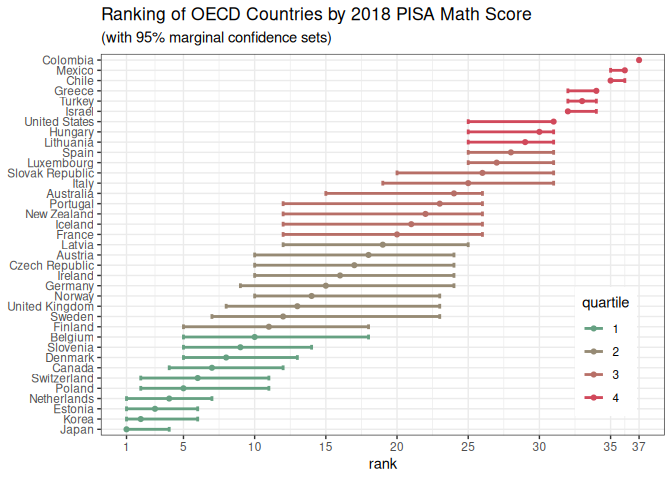
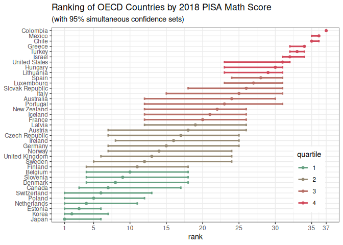

The R package csranks implements confidence sets for positions of populations in a ranking based on values of a certain feature and their estimation errors. Both simultaneous and marginal confidence sets are available, as well as confidence sets with populations occupying top-n positions in the ranking. Work based on Mogstad, Romano, Shaikh, and Wilhelm (2023).
Installation
You can install the released version of csranks from CRAN with:
install.packages("csranks")You can install the development version of csranks from GitHub with:
# install.packages("remotes")
remotes::install_github("danielwilhelm/R-CS-ranks")Example: PISA Ranking
This example illustrates the computation of confidence sets for the ranking of countries according students’ achievements in mathematics. The following dataset contains data from the 2018 Program for International Student Assessment (PISA) study by the Organization for Economic Cooperation and Development (OECD), which can be downloaded at https://www.oecd.org/pisa/data/. Students’ achievement is measured by the average mathematics test scores for all 15-year-old students in the study.
First, load the package csranks and the data:
The dataframe pisa looks like this:
head(pisa)
#> jurisdiction science_score science_se reading_score reading_se math_score
#> 1 Australia 502.9646 1.795398 502.6317 1.634343 491.3600
#> 2 Austria 489.7804 2.777395 484.3926 2.697472 498.9423
#> 3 Belgium 498.7731 2.229240 492.8644 2.321973 508.0703
#> 4 Canada 517.9977 2.153651 520.0855 1.799716 512.0169
#> 5 Chile 443.5826 2.415280 452.2726 2.643766 417.4066
#> 6 Colombia 413.3230 3.052402 412.2951 3.251344 390.9323
#> math_se
#> 1 1.939833
#> 2 2.970999
#> 3 2.262662
#> 4 2.357476
#> 5 2.415888
#> 6 2.989559Consider ranking countries according to their students’ achievement in mathematics. The scores in math_score are estimates of these achievements. The countries’ ranks can be estimated using the function irank():
math_rank <- irank(math_score)
math_rank
#> [1] 24 18 10 7 35 37 17 8 3 11 20 15 34 30 21 16 32 25 1 2 19 29 27 36 4
#> [26] 22 14 5 23 26 9 28 12 6 33 13 31These are only estimated ranks as they are computed from estimates of achievements and therefore estimation uncertainty in the estimates translates to estimation uncertainty in the ranks. The following subsections discuss two different confidence sets for assessing such estimation uncertainty in ranks: marginal and simultaneous confidence sets. Explanations and details about the differences of these two confidence sets can be found in Mogstad, Romano, Shaikh, and Wilhelm (2020). The complete R script containing this example, as well as R scripts for PISA rankings by reading and science scores, can be found in the subdirectory examples/.
Marginal Confidence Sets
The marginal confidence sets for the ranks are computed as follows:
math_cov_mat <- diag(math_se^2)
CS_marg <- csranks(math_score, math_cov_mat, coverage=0.95, simul=FALSE, R=1000, seed=101)
math_rankL_marg <- CS_marg$L
math_rankU_marg <- CS_marg$Uwhere math_rankL_marg and math_rankL_marg contain the lower and upper bounds of the confidence sets for the ranks. They can be plotted by
grid::current.viewport()
#> viewport[ROOT]
plotmarg <- plot(CS_marg, popnames=jurisdiction, title="Ranking of OECD Countries by 2018 PISA Math Score",
subtitle="(with 95% marginal confidence sets)", colorbins=4)
plotmarg
You can then save the graph by
ggplot2::ggsave("mathmarg.pdf", plot=plotmarg)Simultaneous Confidence Sets
The simultaneous confidence sets for the ranks are computed as follows:
CS_simul <- csranks(math_score, math_cov_mat, coverage=0.95, simul=TRUE, R=1000, seed=101)
math_rankL_simul <- CS_simul$L
math_rankU_simul <- CS_simul$Uwhere math_rankL_simul and math_rankL_simul contain the lower and upper bounds of the confidence sets for the ranks. They can be plotted by
grid::current.viewport()
#> viewport[ROOT]
plotsimul <- plot(CS_simul, popnames=jurisdiction, title="Ranking of OECD Countries by 2018 PISA Math Score",
subtitle="(with 95% simultaneous confidence sets)", colorbins=4)
plotsimul
You can then save the graph by
ggplot2::ggsave("mathsimul.pdf", plot=plotsimul)